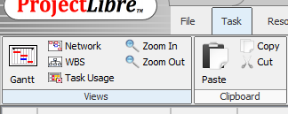
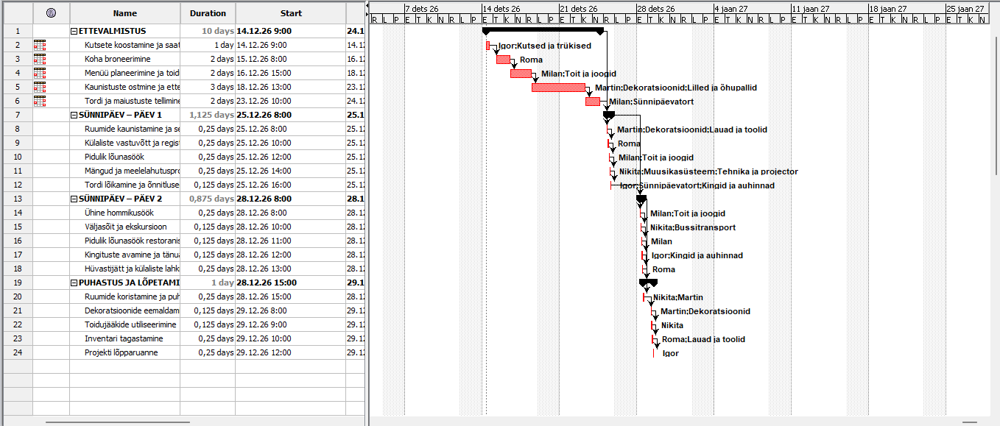
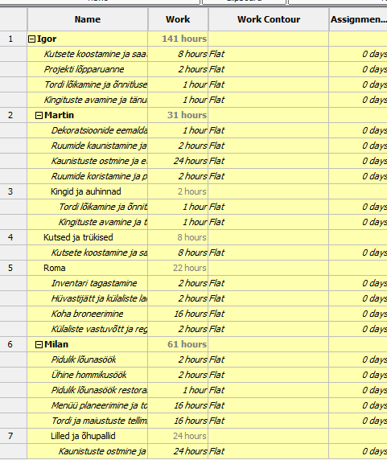
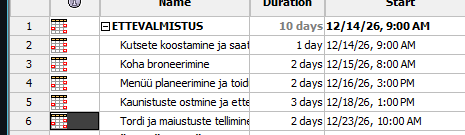

Gantt-diagrammi vaatamine
Gantt-diagrammi avamiseks liigu vahekaardile Task ja vali sealt Gantt.

Gantt-diagramm
Ekraanile kuvatakse projekt koos Gantt-diagrammiga. Vasakul asuvas tabelis saad lisada ja muuta ülesandeid ning allülesandeid, paremal pool on näha visuaalne ajakava koos päevade arvuga.

Resource Usage avamine
Ressursside graafikute vaatamiseks navigeeri vahekaardile Views ja vali sealt Resource Usage.

Resource Usage diagramm
Avanevas vaates on loetletud kõik projektis kasutatavad ressursid — nii materiaalsed kui ka inimressursid. Iga ressursi kohta on näha tööaeg ning ülesanded, millega ta on seotu

Kalender töötab
